Покупка и перенос номера
в приложении Tele2
Спроектировал покупку и перенос номера в приложении без барьеров на входе: время оформления сократилось с 8 до 2 минут.
- Компания

- Роль
- Product Designer
- Период
- 2022–2023
- Продукт
- Мобильное приложение
Коротко
- Задача
- Покупка и перенос номера работали только на вебе: оформление занимало 8 минут, оплачивали и оформляли покупку 3% пользователей.
- Что сделал
- Спроектировал флоу покупки и переноса номера для приложения: без обязательных регистрации и оплаты, с автоматической проверкой eSIM. Провёл юзабилити-тест на 8 респондентах. Вместе с командой сделали CMS для менеджеров на Ant Design.
- Результат
- Оформление — 2 минуты вместо 8, покупки нового номера +420%, переносы +213%, обращений в колл-центр −74%. Тот же флоу запустили в Altel.
Контекст
Проблема
Покупка и перенос номера в Tele2 работали только на вебе. Разработка как раз перешла с аутсорса в инхаус и получила легаси с огромным количеством ошибок на фронте, бэкенде и в дизайне.
Старый процесс терял пользователей: обязательные регистрация и оплата отсекали людей ещё до того, как они становились клиентами.
8 минут
Time on Task
3%
пользователей оплачивали и оформляли покупку
Цель
Основная цель бизнеса — повысить конверсию продажи и переноса номеров. Задачи от заинтересованных лиц:
- Перенести покупку и перенос номера в приложение
- Сделать удобный и понятный пользовательский путь
Моя роль
Как продуктовый дизайнер тесно работал с продакт-оунером, ходил на встречи со стейкхолдерами, чтобы понимать бизнес-цели, и работал напрямую с аналитиком и разработчиками.
Для консистентности развивал и поддерживал дизайн-систему, рассказывал коллегам о её принципах и обучал работать с ней.
Как было: мобильная версия сайта
Старый флоу покупки и переноса номера работал в мобильном адаптиве сайта.
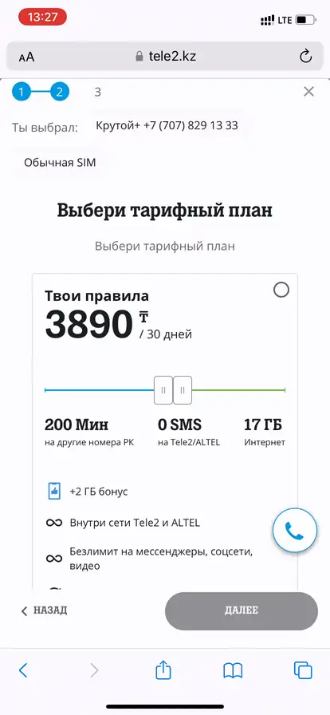
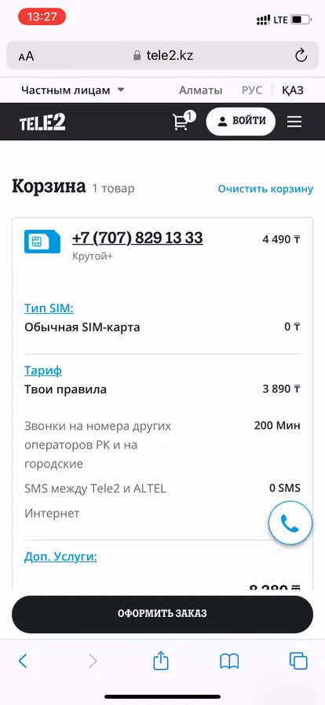
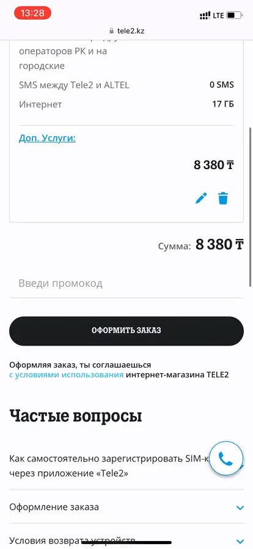
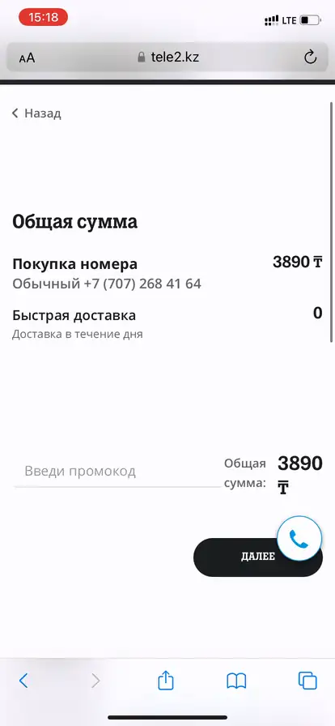
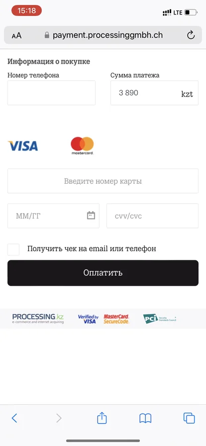
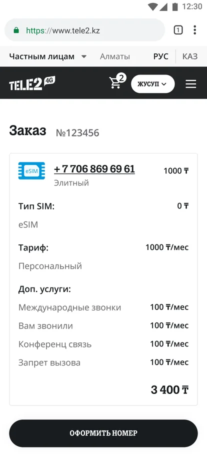
Что было не так
- Фронтенд-баги. Например, пользователь листал страницу, чтобы проверить, поддерживает ли его телефон eSIM, и его отбрасывало наверх.
- Огромные карточки тарифов, а выбрать тариф можно было только нажатием на маленькую радиокнопку.
- Лишний шаг с подключением дополнительных услуг — по аналитике их подключали менее 5% пользователей.
- Путь ломался при возврате в корзину. Чтобы сменить тип SIM-карты или номер, пользователь уходил из корзины на выбор, а потом пытался вернуться нативным свайпом назад — и попадал на самый первый шаг с выбором номера.
- Обязательная регистрация: после нажатия «Оформить» в корзине просили ввести ФИО, почту и номер телефона.
- Оплата с ручным вводом данных карты.
В итоге до корзины доходили 70,4% пользователей, регистрацию проходили только 15%, а оплачивали и оформляли покупку — 3%.
Воронка старого флоу
Доля пользователей, дошедших до каждого шага
- Начали оформление100%
- Дошли до корзины70,4%
- Прошли регистрацию15%
- Оплатили и оформили3%
Процесс
Исследование
Начал с бизнес-требований и анализа технических возможностей. Провёл конкурентный анализ и построил Service Blueprint, чтобы увидеть весь процесс целиком — включая менеджеров, которые обрабатывают заказы, и курьеров, которые доставляют SIM-карты.
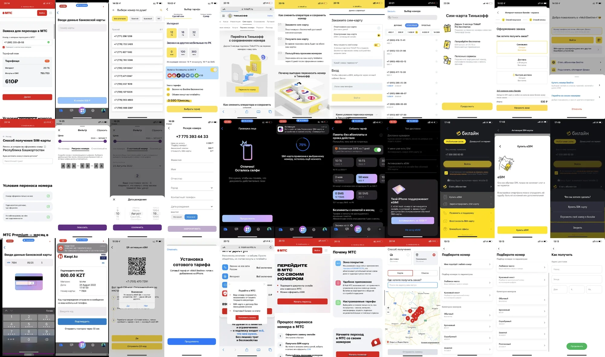
Решение
Решения по улучшению CJM
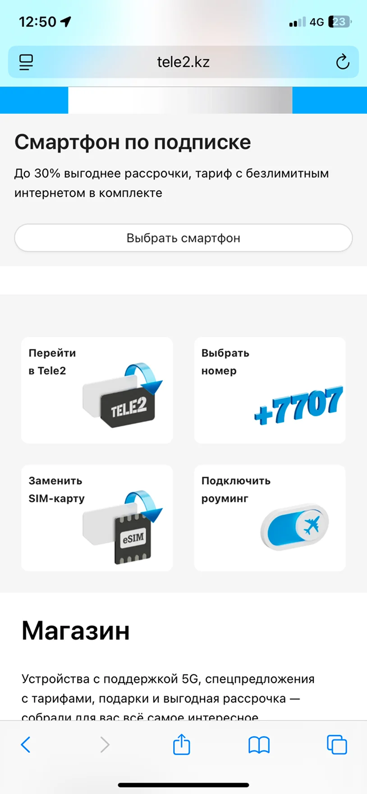
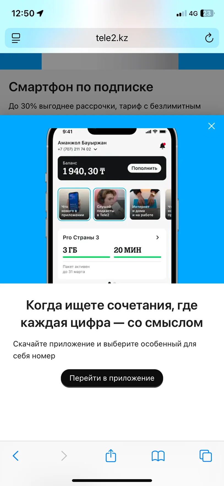
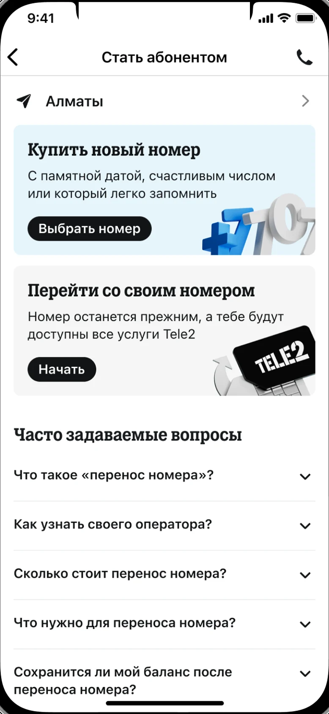
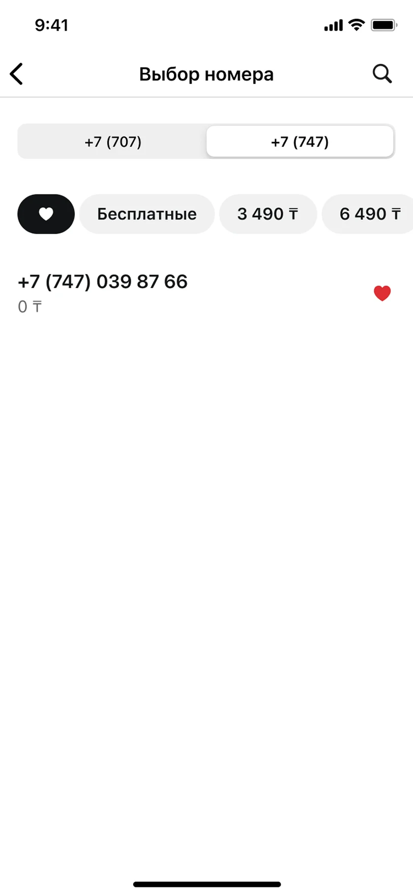
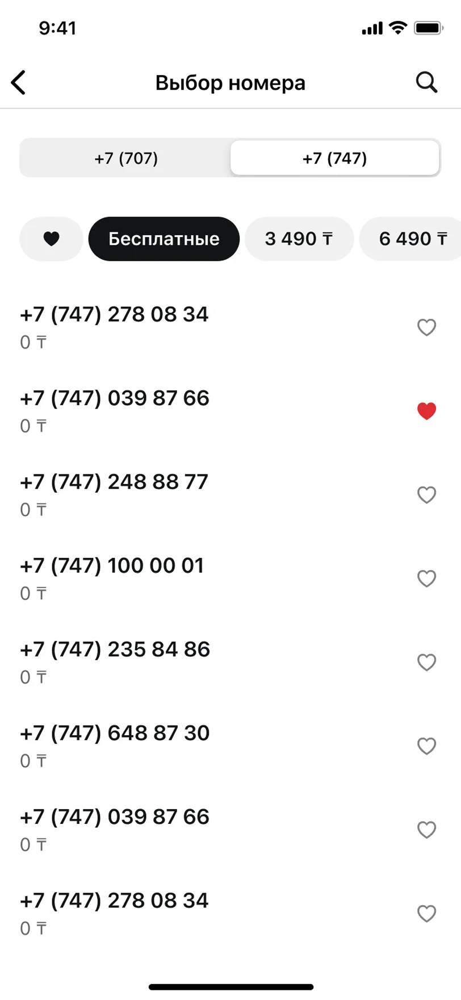
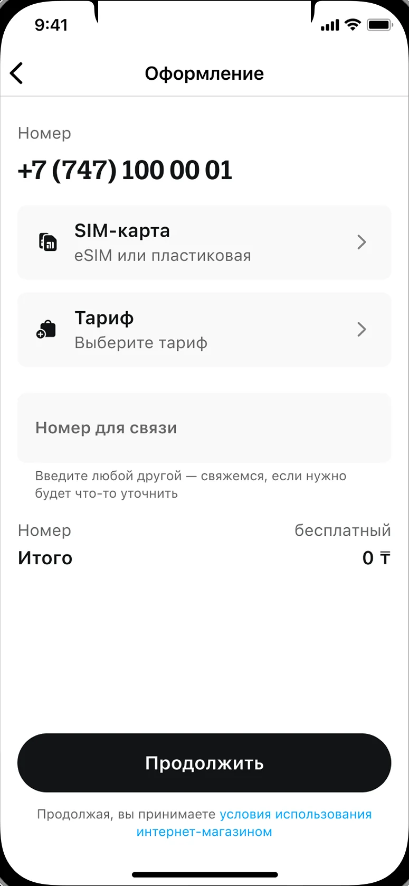
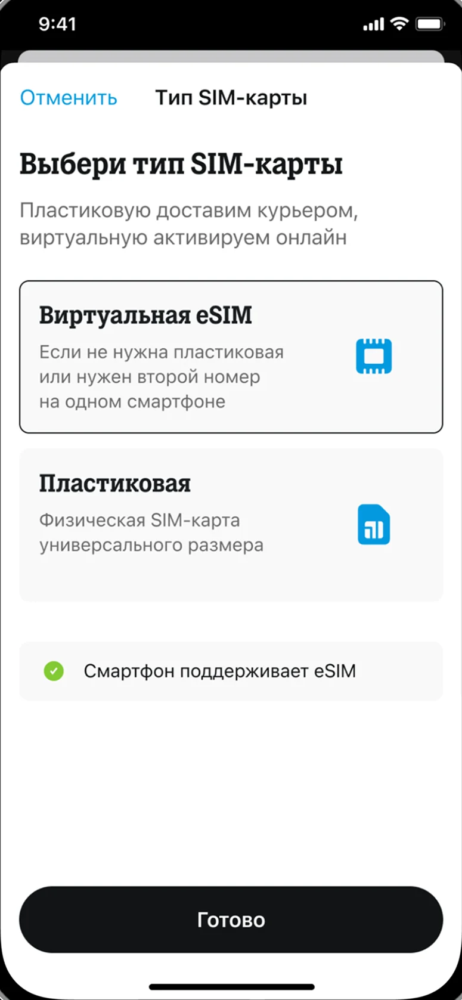
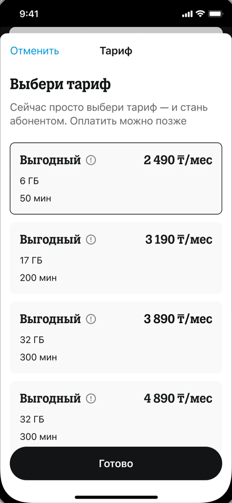
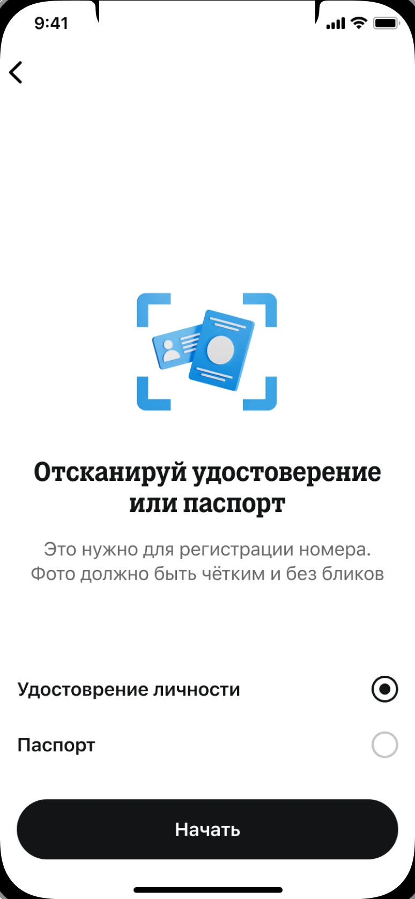
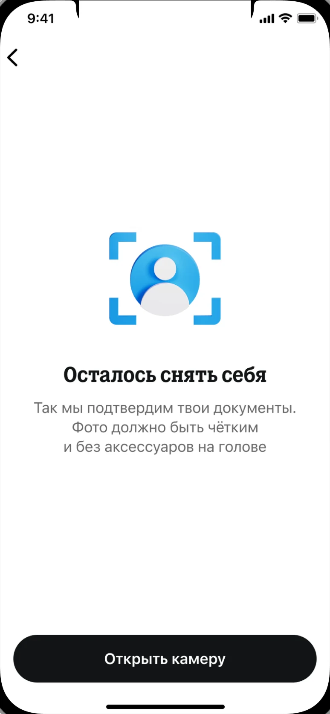
Лендинги с переходом в приложение
Сделали лендинги для покупки и переноса номера — по QR-коду они вели на скачивание приложения.
Автоматическая проверка eSIM
В новом концепте добавил индикатор, который автоматически определял, поддерживает ли телефон eSIM.
Оплата после подключения
Убрали обязательную оплату: пользователь мог оплатить уже после того, как становился клиентом.
Без обязательной регистрации
Пользователь начинал процесс без создания учётной записи.
FAQ на экранах продуктов
Собрали частые вопросы прямо на экранах продуктов, чтобы снизить нагрузку на колл-центр.
Проектирование
Собрал вайрфреймы и провёл несколько итераций по обратной связи. Затем сделал high-fidelity макеты на дизайн-системе, собрал прототип пользовательских сценариев и подготовил скрипт с заданиями для юзабилити-тестирования.
Юзабилити-тест
Продуктовый подход в компании только развивался, поэтому я взял исследования на себя и организовал небольшую комнату для пользовательских интервью и юзабилити-тестов.
8
респондентов
>30
заданных вопросов
21
проверенная гипотеза
Методы тестирования
- качественный модерируемый тест
- тест 5 секунд
- тест первого клика
CMS для менеджеров
Вместе с новым флоу разработали CMS для обработки заявок:
- автоматизировали ручную работу
- собрали все заявки в одном окне
- сделали удобную навигацию по данным клиента
CMS собрана на open-source решении Ant Design. Внедрить его для админок предложил я, чтобы разрабатывать их быстрее: таблицы, фильтры и формы берутся готовыми, а не собираются с нуля.
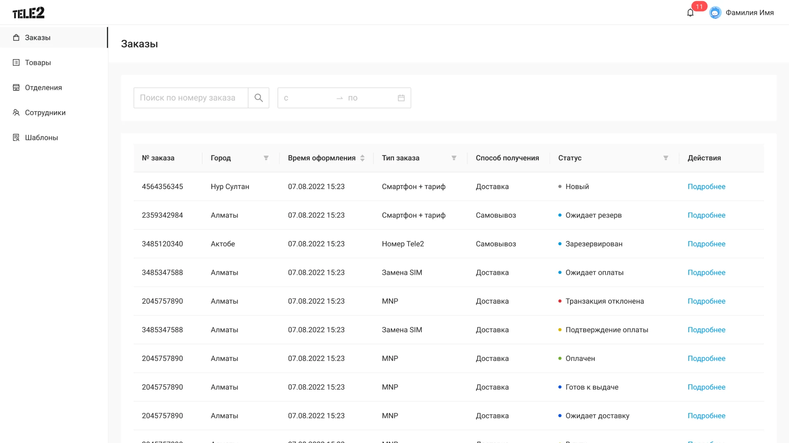
Итог
Результат
3% → ≈12%
конверсия в покупку, оценка при среднем числе начатых оформлений ≈33 тыс. в месяц
8 → 2 мин
Time on Task
−74%
обращений в колл-центр по покупке и переносу номера после релиза
Покупки и переносы до и после релиза
Новый флоу не продвигали рекламными кампаниями. После релиза выросли и покупки нового номера, и переносы.
+420%
покупок нового номера: 1 137 в июне → 5 917 в январе
+213%
переносов номера: 372 в июне → 1 166 в январе
Покупки нового номера в месяц
С января по январь, релиз нового флоу — в июне
до релизапосле релизарелиз в июне
Переносы номера в месяц
С января по январь, релиз нового флоу — в июне
до релизапосле релизарелиз в июне
Тот же флоу в Altel
Благодаря единой дизайн-системе на токенах флоу не пришлось проектировать заново: мы переключили макеты на тему Altel и передали их команде Altel. После релиза метрики пошли вверх и у второго бренда. Как устроена дизайн-система — в кейсе «Дизайн-система на токенах для Tele2 и Altel».
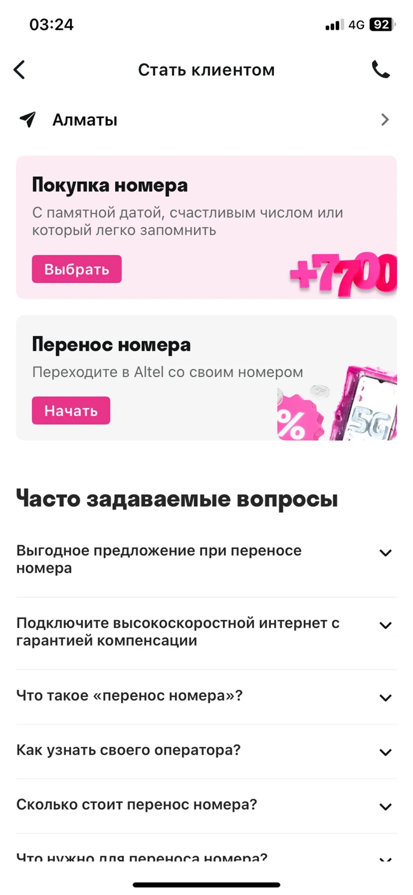
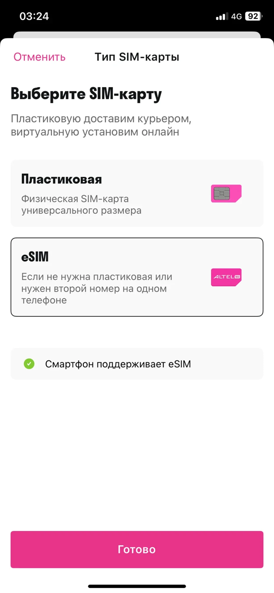
+428%
покупок нового номера в Altel: 562 в ноябре → 2 969 в январе
×10
переносов номера в Altel: 48 в ноябре → 479 в январе
Покупки нового номера в Altel в месяц
Altel, с января по январь, флоу запустили в конце ноября
до релизапосле релизарелиз в конце ноября
Переносы номера в Altel в месяц
Altel, с января по январь, флоу запустили в конце ноября
до релизапосле релизарелиз в конце ноября
Что осталось нерешённым
Биометрия в новом флоу работала через сторонний сервис, и он иногда ломался. Эти сбои били по флоу и конверсии, а на момент моего ухода проблема оставалась открытой.
Документация
Вёл подробную документацию по продукту в Notion: фиксировал результаты исследований и артефакты, собирал и анализировал обратную связь от контакт-центра и других стейкхолдеров. Это помогало структурировать информацию и держать процессы прозрачными.